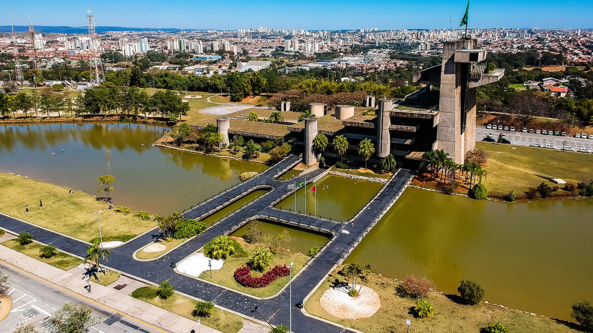

Sorocaba é uma das cidades mais desenvolvidas do interior de São Paulo, conhecida por sua história industrial, crescimento sustentável e qualidade de vida. Fundada em 1654, se destacou no período colonial com a produção de ferro e, mais tarde, com o comércio de tropeiros. Esse passado fez do município um dos berços da industrialização paulista, mantendo até hoje sua força econômica.
Com investimentos em tecnologia, mobilidade e meio ambiente, Sorocaba é referência em planejamento urbano inteligente. A cidade possui uma ampla malha de ciclovias, parques urbanos e projetos voltados à sustentabilidade, tornando-se exemplo de equilíbrio entre modernidade e preservação ambiental.
Além da economia forte, Sorocaba também é um centro cultural e turístico. Seus parques, zoológico e espaços históricos oferecem lazer para moradores e visitantes. Com eventos, museus e opções gastronômicas, o município se consolidou como destino diversificado no interior paulista.
• Parque Zoológico Municipal Quinzinho de Barros – Um dos zoológicos mais completos do Brasil, referência em conservação.
• Parque Natural da Água Vermelha – Área de lazer com lagos, trilhas e atividades ambientais.
• Mosteiro de São Bento – Construção histórica que preserva a tradição religiosa da cidade.
• Museu Histórico Sorocabano – Local dedicado à memória cultural e industrial de Sorocaba.
• Parque das Águas – Espaço moderno com fontes, lazer e eventos ao ar livre.

Retorne a Página Anterior